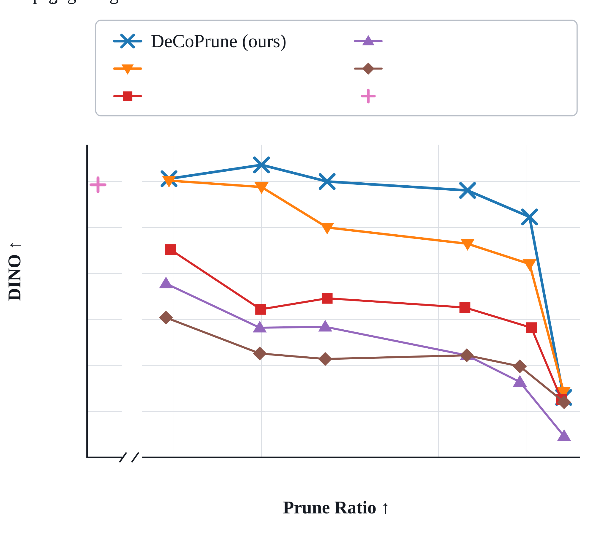

Reappear
Recover an object, person, or event observed earlier, preserving its identity and appearance after it has left the recent context.
Autoregressive video diffusion · Project page
Keep distinctive visual evidence. Prune what the context already explains.
A training-free memory policy for long-context video generation.
01 / Overview
As a video grows, so does its KV cache. DeCoPrune uses a signal already present in the generator: how much each token’s clean prediction changes between an intermediate probe and the final denoising result.
Low-discrepancy tokens are treated as redundant. High-discrepancy tokens preserve distinctive evidence in the long-term cache. No additional predictor or model training is required.

Historical KV workload pruned
Speedup over FullKV
DINO consistency · FullKV: 0.6803
Context-memory continuation tasks
Main comparison: LingBot World v2 on four H200 GPUs, averaged over three seeds. DINO is reported on a 0–1 scale.
Case study / From context to recall
A green-banded thermos appears, disappears, and is requested again. Watch the full context alongside what DeCoPrune keeps.
Context and recorded mask share one playhead. Select a chapter to inspect it.
03 / Recall prompt
The hands lift the previously seen thermos from the canvas bag. Its shape, markings, and appearance must be recovered from earlier context.
Continue the coherent first-person video from its final frame. Reproduce the exact same physical slender cylindrical thermos with its screw-top lid from the preceding context. Treat the preceding video as the complete and authoritative visual reference for the thermos. The action is explicit and continuous: the same hands naturally lift the same slender cylindrical thermos from the canvas day bag back into clear view. Preserve the thermos's exact instance identity, body and lid geometry, dimensions, proportions, neck rings, base, decorative-marking layout, materials, texture, wear, surface details, scale, orientation, motion, and hand interaction. Maintain the same scene, lighting, shadows, perspective, spatial layout, viewpoint behavior, and visual style, with physically plausible and temporally smooth motion.
Lakeside shelter: the first 3 seconds of the continuation, played at its original speed. The context overlay and generated continuation are from the same case and run. The prompt below is the benchmark continuation prompt. This companion example follows Figure 1's presentation, not the exact Figure 1 run; its metrics are not substituted for Figure 1's.
The mask is a recorded KV-retention overlay, not the schematic animation below. Only the 60-second context portion is shown; alignment padding and generation frames are excluded.
Case and benchmark prompt ↗02 / Figure 3, in motion
Follow the predictions down to DeCoPrune,
then the retention mask back to the online cache.
Swipe the diagram to follow the full flow ↔
The retained history conditions generation of the current chunk.
Schematic animation using Figure 3 assets, not a recorded inference trace. The 12×12 illustrative mask is derived from block-averaged brightness of the displayed heatmap, preserving its spatial pattern; it is not the exact latent-space mask at γ = 0.10. Mask computation happens during denoising; physical gather occurs when the chunk leaves the recent window (the delay is abbreviated here). Gray dashed: denoising · blue: data flow · green: retention mask. Published setting: probe step 2 (τ* = 899), γ = 0.10.
03 / Main results
DeCoPrune preserves near-FullKV consistency while pruning historical KV workload. Select a point to inspect the trade-off.
| Method | DINO ↑ | PR ↑ | FPS ↑ | Speedup ↑ | Temporal ↑ | Motion ↑ | Aesthetic ↑ | Image ↑ |
|---|
Streaming and DummyForcing discard intermediate history, so their pruning budgets differ.
04 / CMBench
58 approximately one-minute episodes.
116 tasks that ask the model to recall earlier visual evidence.
Recover an object, person, or event observed earlier, preserving its identity and appearance after it has left the recent context.
The context shows a camera transition from A to B and back to A. The continuation then revisits B, recovering the same scene and its salient object.
05 / Qualitative comparisons
A 10-second original, followed by six methods.
Inspect the source, then compare the continuations.
Case-level DINO scores are shown on a 0–1 scale; they are not the three-seed averages above.